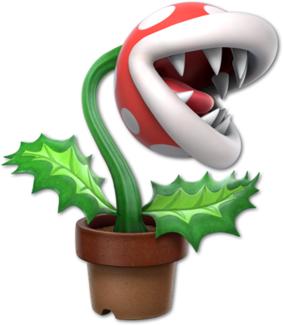
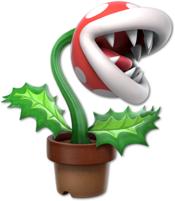

Les arbustes
BAMBOU NON TRAÇANT : FARGESIA RUFA
voir arbusteCERISIER NAIN AUTOFERTILE 'GARDEN BING
voir arbusteGENÉVRIER 'BLUE CARPET
voir arbustebambou non tracant
présentation
Le Fargesia rufa est un bambou non traçant au feuillage vert et fin. Idéal en massif ou en haies, il se cultive également très bien en pot
Le Fargesia Rufa est un bambou aux feuilles vertes longues et fines originaire de Chine. Il forme des touffes denses légèrement retombantes. Ses chaumes vertes peuvent atteindre plus de 3 mètres de hauteur et de largeur, elles jaunissent au fur et à mesure de leur développement. Le Fargesia Rufa n'est pas un bambou traçant, il est cespiteux, ainsi les végétaux aux alentours ne seront pas envahis, il n'y a donc pas besoin de délimiter l'espace avec une barrière anti-rhizome. Cela simplifie grandement sa plantation.
Il est très rustique mais supporte mal les fortes chaleurs et la sècheresse. Il faut donc préférer un endroit à l'ombre voir en mi-ombre pour planter le Fargesia Rufa.
Même s'il grandit assez rapidement, il est aisé de contrôler sa croissance car il ne craint pas d'être taillé. Ce bambou se plante isolé dans le jardin et peut servir à former de belles haies, il peut aussi se cultiver en pot ou jardinière. En pleine terre comme en pot il faut prévoir un sol profond, frais et bien drainé pour que le bambou puisse se sentir bien.
Pour la plantation de haie, compter une distance de plantation de 80cm à 1 m entre chaque pied.
Les bambous prennent leur feuillage d'hiver à la saison froide. Le froid et le vent abime le feuillage qui se renouvelle moins vite à cette période. Les bambous reprennent leur croissance dès le printemps et renouvellent alors leur feuillage.
Feuillage d'hiver. Pas de panique si votre bambou a des feuilles qui s'abiment en hiver ou tombent. De nouvelles feuilles bien vertes renouvelleront le feuillage au printemps. Le bambou a un feuillage persistant mais il le renouvelle toute l'année, un peu plus en automne hiver. Il reste tout de même occultant toute l'année.
Caractéristiques
ENTRETIEN & PLANTATION
- Période de plantation : Toute l'année hors période de gel
- Exposition : ombre
- PH du sol : neutre,acide
- Composition du sol : normal
- Humidité du sol : normal
- Température minimale : -26°C
- Utilisation en jardin : massif,haie,isolé,bac
- Utilisation pour la maison : terrasse,balcon
CARACTÉRISTIQUES VÉGÉTALES
- Feuillage décoratif : Oui
- Couleur feuille : vert
- Feuillage : persistant
- Hauteur à maturité : 2 m-3 m
Botanique
- Rusticité : rustique
- Espèce : rufa
- Température minimale : -26°C
- Nom botanique : Fargesia rufa
- Famille : Graminées
CERISIER NAIN AUTOFERTILE
presentation
Il a de multiples intérêts, une belle floraison blanche au printemps, et, à partir de mi-juin, de gros fruits d'un beau rouge vif brillant. Il sera très décoratif cultivé en pot, ou il prospère très bien mais aussi en pleine terre. Il y maintiendra sa petite taille. Malgré le fait qu’il soit petit, il produit de beaux et gros fruits qui n’en sont pas moins savoureux. Il est le partenaire idéal de toutes les personnes souhaitant avoir un arbre fruitier sur leur balcon ou dans tout autre espace réduit.
Plus produit: - Donne de gros fruits sucrés rouge vif - Floraison décorative au printemps - Adapté à la culture en pot sur la terrasse.
Plantation et entretien : L’arbre nain pousse dans tous les sols. En bac, préférez un mélange de 2/3 de terre et 1/3 de terreau universel avec un fond de graviers. Les fruitiers nains ont l'avantage de bien supporter le froid étant donnée leur floraison tardive. Pour éviter les maladies, un traitement préventif à base de cuivre peut-être effectué lors du bourgeonnement. Porte-greffe: Merisier franc.
Cette variété de cerisier est auto fertile (variété n’ayant pas besoin d’autres arbres pour être pollinisé). Le 'Garden Bing®' convient parfaitement pour les situations isolées.
Pour la culture en pot, quelques : - plus le pot est petit plus le terreau dessèche vite - la terre s'épuise de ses éléments nutritifs, il est conseillé de faire des apports d'engrais réguliers. - Les racines sont plus sensibles au froid, protégez le pot avec un isolant l'hiver.
Caractéristiques
ENTRETIEN & PLANTATION
- Période de plantation : de novembre à mars, hors gel
- Exposition : soleil,mi-ombre
- Température minimale : °C
- Utilisation en jardin : isolé,bac
- Utilisation pour la maison : balcon
CARACTÉRISTIQUES VÉGÉTALES
- Feuillage décoratif : Non
- Couleur fleur : blanche
- Feuillage : caduc
- Hauteur à maturité : 1,5 m
- Période de floraison : fin mars
BOTANIQUE
- Rusticité : rustique
- Espèce : cerasus
- Température minimale : °C
- Nom botanique : Prunus cerasus 'Garden Bing®'
- Famille : Rosacées
Le Juniperus
présentation
Le Juniperus x Squamata 'Blue Carpet' aussi appelé genévrier du Népal prend une forme tapissante bien étalée et compacte. Les rameaux sont courts et rigides avec une teinte bleu argenté remarquable.
Une plante peu exigeante, très rustique, qui garde son feuillage toute l'année. La croissance de cette variété est globalement lente, surtout chez les sujets jeunes mais assez rapide pour un conifère nain.
Ce Genévrier s'utilise à la fois en isolé dans une rocaille, en bac, sur la terrasse et aussi en tant que couvre-sol sur un talus. Il peut aussi être placé en pot sur la terrasse où il garnira même en hiver.
A planter dans un sol bien drainé mais gardant la fraîcheur, au soleil. Il supporte de nombreux types de sols, même pauvres.
Caractéristiques
ENTRETIEN & PLANTATION
- Arrosage : modéré
- Zones climatiques France : méditerranéen,océanique,moyen
- Période de plantation : Toute l'année (hors gel)
- Niveau de soin : facile
- Exposition : soleil,mi-ombre
- PH du sol : neutre,acide,alcalin
- Composition du sol : normal,argileux,calcaire,sableux,terre de bruyère,riche en humus
- Humidité du sol : normal,sec
- Température minimale : -20°C
- Utilisation en jardin : massif,bordure,rocaille,couvre-sols,isolé,bac
- Utilisation pour la maison : terrasse
CARACTÉRISTIQUES VÉGÉTALES
- Feuillage décoratif : Oui
- Couleur feuille : argenté,bleu
- Saison d'intérêt : printemps,été,automne,hiver
- Feuillage : persistant
- Largeur à maturité : 1,5 m
- Hauteur à maturité : 0,5 m
BOTANIQUE
- Origine : Hémisphère nord
- Rusticité : semi-rustique
- Espèce : x squamata
- Température minimale : -20°C
- Nom botanique : Juniperus x squamata 'Blue Carpet'
- Famille : Cupressacées